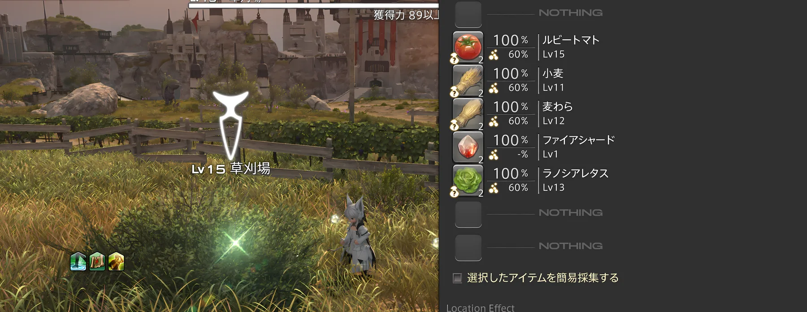

クラフター
素材から装備、食事、薬、家具など、さまざまなアイテムを製作するクラスです。
製作した物は自分で使うだけでなく、マーケットへ出品してギルを得ることもできます。最初はレベル上げを急ぐより、作れる物を実際に作って操作を覚えるだけでも十分です。

ギャザラー
フィールドで鉱石、植物、魚などを集めるクラスです。
集めた素材はクラフターの製作に使えるほか、マーケットへ出品できる物もあります。目的の素材を自分で取りに行けるようになると、製作や金策の選択肢も増えていきます。

いつ始めても大丈夫
メインストーリーを止めて寄り道しても、後からまとめて始めても問題ありません。興味を持ったタイミングで触ってみてください。
クラフターとギャザラーはお互いに素材を使い合うことが多いので、両方を少しずつ触ると「採る → 作る → 売る」という流れも分かりやすくなります。